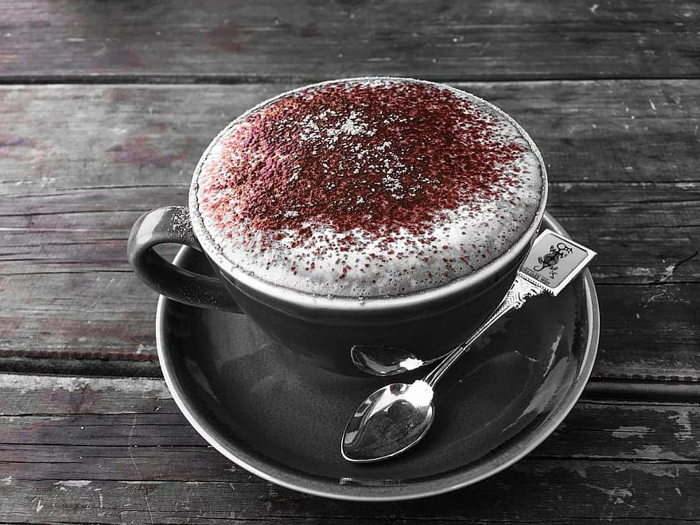

5 Reasons why Coffee is good for you

1. Can Improve Energy Levels and Make You Smarter.
This is because it contains a stimulant called caffeine, the most commonly consumed psychoactive substance in the world. After you drink coffee, the caffeine is absorbed into your bloodstream. From there, it travels to your brain. In the brain, caffeine blocks the inhibitory neurotransmitter adenosine. When this happens, the amount of other neurotransmitters like norepinephrine and dopamine increases, leading to enhanced firing of neurons. Many controlled studies in humans show that coffee improves various aspects of brain function — including memory, mood, vigilance, energy levels, reaction times and general mental function
2. Can Help You Burn Fat
Caffeine is found in almost every commercial fat-burning supplement — and for good reason. It’s one of the few natural substances proven to aid fat burning. Several studies show that caffeine can boost your metabolic rate by 3–11%. Other studies indicate that caffeine can specifically increase fat burning by as much as 10% in obese individuals and 29% in lean people.
3. Can Drastically Improve Physical Performance
Caffeine stimulates your nervous system, signaling fat cells to break down body fat. But it also increases epinephrine (adrenaline) levels in your blood. This is the fight-or-flight hormone, which prepares your body for intense physical exertion. Caffeine breaks down body fat, making free fatty acids available as fuel. Given these effects, it’s unsurprising that caffeine can improve physical performance by 11–12%, on average. Therefore, it makes sense to have a strong cup of coffee about half an hour before you head to the gym.
4. Contains Essential Nutrients
Many of the nutrients in coffee beans make their way into the finished brewed coffee. A single cup of coffee contains:- Riboflavin (vitamin B2): 11% of the Reference Daily Intake (RDI).
- Pantothenic acid (vitamin B5): 6% of the RDI.
- Manganese and potassium: 3% of the RDI.
- Magnesium and niacin (vitamin B3): 2% of the RDI.
Though this may not seem like a big deal, most people enjoy several cups per day — allowing these amounts to quickly add up.